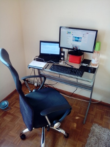

Trabalhando remotamente (e em casa!)
Um pouco sobre minha nova fase de homeoffice.

Muitas mudanças
Em um período de cinco anos, saí de um emprego tóxico, mudei duas vezes de cidade, fui freelance, fracassei em duas sociedades, entrei e saí de uma profunda depressão, voltei a trabalhar formalmente, fui pra São Paulo, mudei duas vezes de emprego, sempre melhorando de condições, e agora estou trabalhando em regime de homeoffice. Ah, e pivotei minha carreira de um jurássico sysadmin, para um toper programador.
Interlúdio
Nesses dois empregos, umas das coisas mais valorizadas foi a minha idade. Estranho, pois minhas buscas anteriores, por muito tempo, esbarravam claramente na minha idade, que então era 44 anos.
E agora percebo que profissionais mais experientes e com maior idade são tão procurados quanto os jovens. Um alívio!
Finalmente
E eis que um dia recebo uma mensagem por email, sobre um processo seletivo de que tinha participado há uns 6 meses, para o qual não fui aprovado, mas que me garantia a presença em um "banco de talentos".
Nunca botei fé, mas aconteceu, o tal banco de talentos era uma realidade. E agora estou trabalhando novamente com um produto, programando em Python, com uma galera incrível, numa empresa porreta, a CARGOBR.
Rotina
Voltei a dormir o suficiente, voltei a acompanhar a rotina de minha família, estou tranquilo, com as energias voltadas aos desafios que aparecem, com a mente muito mais afiada.
Cumpro horários rígidos em casa, pois me distraio fácil. Entro às 9h00, uma hora de almoço (agora posso tirar uma soneca na minha cama depois da refeição), e saio às 18h00.
Reuniões ordinárias diárias com uma equipe majoritariamente remota, reuniões extras conforme a necessidade, eventualmente a presença física na sede da CARGOBR.
Tenho meu canto de trabalho, que quase não é invadido. Minhas filhas são muito disciplinadas nisso. Ah, e o melhor investimento desses últimos meses: uma boa cadeira. Como isso ajuda!
Cada pessoa funciona de um jeito, eu funciono melhor em casa. Tenho tudo que preciso à mão, posso resolver meus problemas pessoais facilmente e de maneira imediata, com menor impacto nas minhas rotinas profissionais.
A quem ainda não trabalha remoto, mas deseja, recomendo. Está sendo a experiência mais fabulosa de minha vida profissional, com nítidas melhorias em minha vida pessoal.